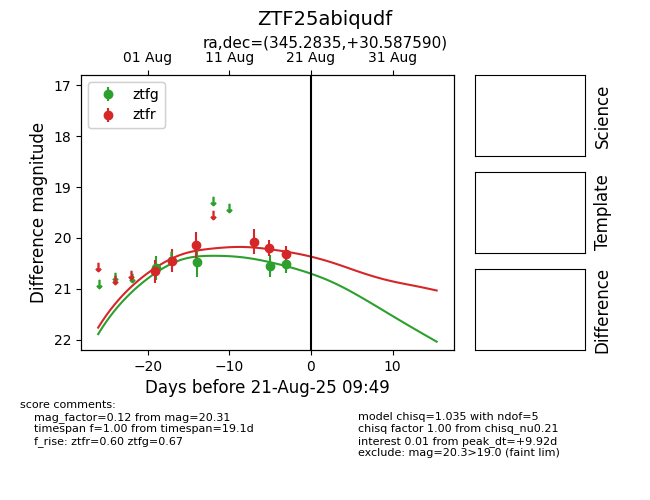

Target ZTF25abiqudf at 2025-08-21 09:49, see:
FINK: fink-portal.org/ZTF25abiqudf
Lasair: lasair-ztf.lsst.ac.uk/objects/ZTF25abiqudf
ALeRCE: alerce.online/object/ZTF25abiqudf
alt names
ZTF25abiqudf (ztf,alerce)
coordinates:
equatorial (ra, dec) = (345.2835,+30.58759)
galactic (l, b) = (96.4756,-26.55663)
photometry
last ztfg=20.51, ztfr=20.31
4 ztfg, 6 ztfr detections
